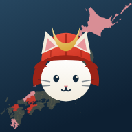

指で動かして位置を、二本指でつまんで大きさを決められます
小
大

この端末では、開くときに確認しています。
地図をさわると、その地方に寄ります
地図データ：Geolonia「SVG Map of Japan」（Wikipedia「日本地図.svg」に基づく／GFDL）
指で動かして位置を、二本指でつまんで大きさを決められます
次に開くときから、Face ID（または端末のパスコード）で確認します。
解除の合言葉も決めてください。機種変更などでFace IDが使えなくなったとき、この言葉だけが頼りになります。
同じ合言葉を入れた端末どうしが、ひとつの記録につながります。相手にも同じ言葉を伝えてください。
合言葉はこの端末の中だけに残ります。どこにも公開されません。